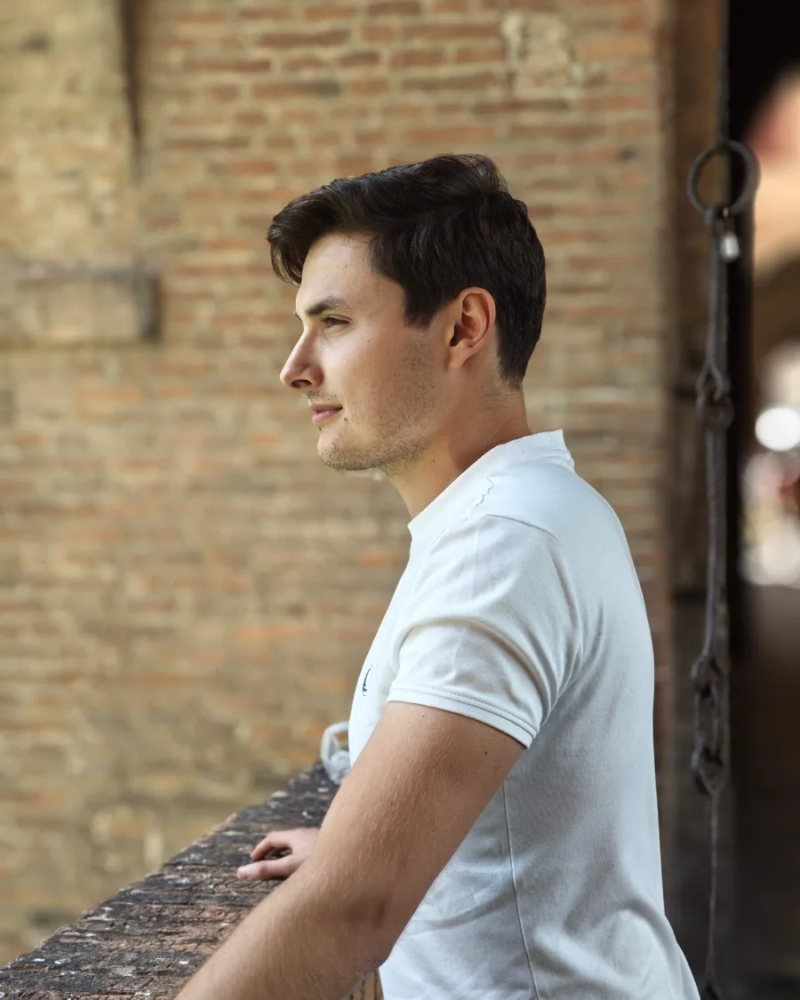

Marek
Provoz a komunita
Přišel z IT, kde strávil roky u obrazovky a s lidmi mluvit skoro neuměl. Rozhodl se, že to chce změnit — a změnil. Dnes ho nejvíc baví přesně to, co mu dřív šlo nejhůř: potkávat lidi, chodit po komunitách a pomáhat jim růst.
Nejvíc ze všeho v těch tanečních. Odsud je celý nápad na studio: místo, kde komunity vznikají, potkávají se a mají kam chodit.